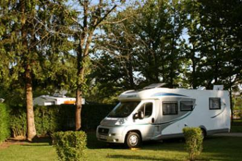
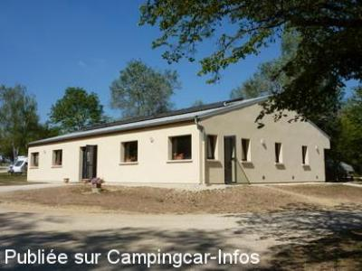
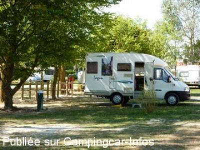

AC = Camping acceptant les camping-cars de :
MESNIL SAINT PÈRE
(N° 316)
Accès/adresse :
Route du Lac
Camping Kauwan Resort Lac d'Orient****
10140 MESNIL SAINT PÈRE
Camping Kauwan Resort Lac d'Orient****
10140 MESNIL SAINT PÈRE
Latitude : (Nord) 48.26334° Décimaux ou 48° 15′ 48′′
Longitude : (Est) 4.34634° Décimaux ou 4° 20′ 46′′
Tarif : 2013
Forfait 2 personnes, services, électricité 10A : 25 à 34 €
Personne + 7 ans : 6 à 8 €
Enfant - 7 ans : 3 à 4 €
Animal : 3 €
Taxe de séjour + 13 ans : 0,30 €
Type de borne : Autre
Services :


Accès handicapés
Supérette
Lave-linge
Sèche-linge
Piscine
Location VTT
Barbecue autorisé
Restauration
Commerces à 1 km
Autres informations :
Ouvert du 01/04 au 30/09
206 emplacements stabilisés sur herbe
Tel : +33 (0)325 406 185
info@camping-lacdorient.com
http://www.camping-lacdorient.com

Le 10/06/2013 par Phil-France

Le 25/09/2012 par JPS.68

Le 25/09/2012 par JPS.68
de
Phil-France
le 10/06/2013 :
§
Une soirée et une journée bien agréables sur la parcelle n°33, spacieuse et arborée, proche sanitaires impeccables.
- Piscine, Bar-Restaurant, Superette, Laverie...
Tarif 25€ + 3€ pour le chien...
§
Une soirée et une journée bien agréables sur la parcelle n°33, spacieuse et arborée, proche sanitaires impeccables.
- Piscine, Bar-Restaurant, Superette, Laverie...
Tarif 25€ + 3€ pour le chien...
de
JPS. 68
le 26/09/2012 :
Bonjour
La borne extérieur du camping n'existe plus ,passage début septembre 2012.
Bonjour
La borne extérieur du camping n'existe plus ,passage début septembre 2012.
de
DEN62
le 22/08/2011 :
De passage début août, les services se font en face du camping mais uniquement les vidanges car pas d'eau disponible ( borne HS ) attention aux branches d'arbres tous proche.
La boulangère passe vers 9h00 du mat.
Le plan d'eau est très vaste, bonne baignade dans de l'eau claire
De passage début août, les services se font en face du camping mais uniquement les vidanges car pas d'eau disponible ( borne HS ) attention aux branches d'arbres tous proche.
La boulangère passe vers 9h00 du mat.
Le plan d'eau est très vaste, bonne baignade dans de l'eau claire